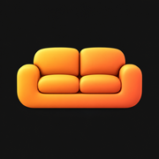
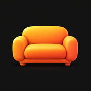
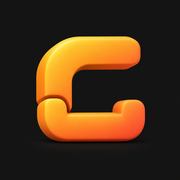
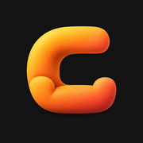

Couchside
View the first round
More depth.
Same warm welcome.
Four refinements of Soft Seat, Afterglow and Couchside C, with more sculptural depth and today’s amber-to-coral palette. Select a direction to preview its Home Screen and circular crops. Selection only changes this comparison preview.Selected for Couchside: Afterglow Ember
Four refined app icon concepts











Selected crop preview
Afterglow Ember
Afterglow returns with stronger volume and a richer amber-to-coral finish. Soft lighting brings out the cushions, arms and base.
Rounded square · 60 px
Circular mask · 60 px